Djangon asentaminen palvelimelle
Ensimmäiseksi päivitin metadatan komennolla sudo apt-get update ja vaihdoin apachen testisivun
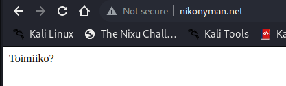Loin käyttäjällä weppisisältöä
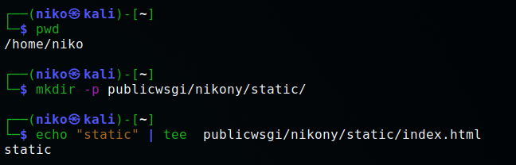Seraavaksi loin virtual hostin komennolla sudoedit /etc/apache2/sites-available/nikony.conf
Ja otin luomani .conf tiedoston käyttöön ja poistin muut käytöstä
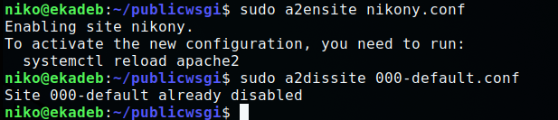Seuraavaksi tarkistin vielä konfiguraatiot:
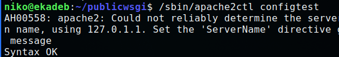Syntaksi oli OK, jonka jälkeen uudelleen käynnistin Apachen sudo systemctl restart apache2
Seuraavaksi tarkistin onko minulla pääsy tiedostoihin curl http://localhost/static/
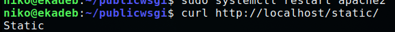Seuraavaksi asensin VirtualEnv ja loin virtuaaliympäristön:
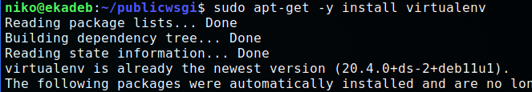Käynnistin virtuaaliympäristön, asensin Djangon ja tarkistin onnistuiko asennus:

Jostain syystä requirements.txt kautta ei löytynyt djangon verioita, joten tein asennuksen "manuaalisesti"

Loin uuden projektin django-admin starproject nikony, jonka jälkeen menin muokkaamaan aiemmin luomaani .conf tiedostoa
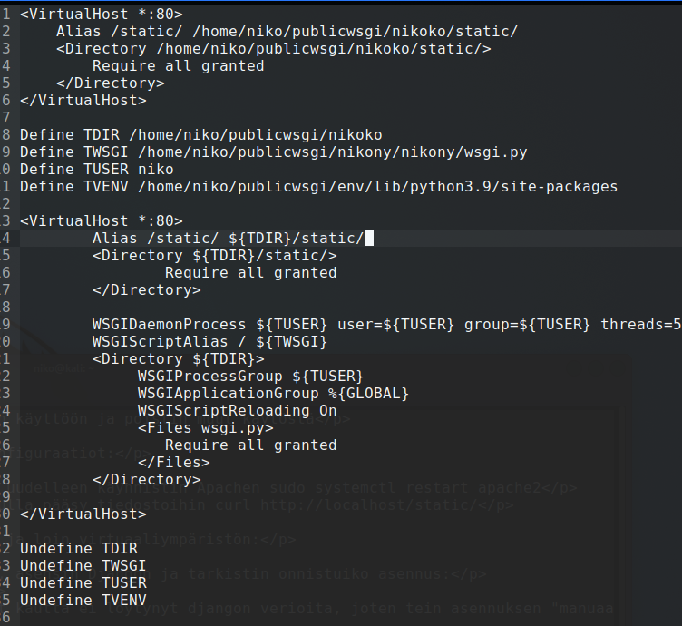Seuraavaksi asensin Apachen wsgi moduulin sudo apt-get -y install libapache2-mod-wsgi-py3, tarkistin konfiguraatiot /sbin/apache2ctl configtest, sekä käynnistin Apachen uudestaan sudo systemctl restart apache2. Syntaksi oli OK
Annoin pari eri curl komentoa ja ei ainakaan tullut virheilmoituksia, joten jatkoin seuraavaan vaiheeseen.
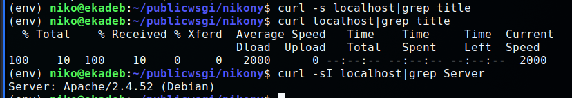Poistin debuggauksen käytöstä ja lisäsin domainini allowed hosts kohtaan.
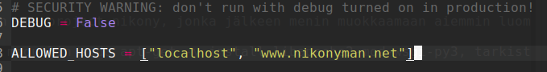"Kosketin" vielä wsgi.py tiedostoa touch nikony/wsgi.py ja käynnistin uudelleen Apachen, jotta asetukset tulisivat voimaan
Kun menin nikonyman.net, nikonyman.net/static tai localhost ei sivuihin ollut tullut muutoksia. En myöskään päässyt serverin puolelta firefoxiin - sain virheilmoituksen puuttuvasta DISPLAYsta. Tämä viittasi siihen ettei minulla ole siellä mitään graafista liittymää(?) Kokeilin ssh asetuksista X11 forward asetuksia, mutta en saanut juurikaan mitään aikaiseksi (enkä tiedä olisiko ne toimineetkaan). Error.logia katsoin, mutta en saanut mistään kiinni mikä olisi vialla. Tein myös migrate jutut ja muut. Lopuksi palasin kotikansioon ja annoin komennon rm -r publicwsgi, poistin/palautin .conf tiedostot niin kuin ne olivat.
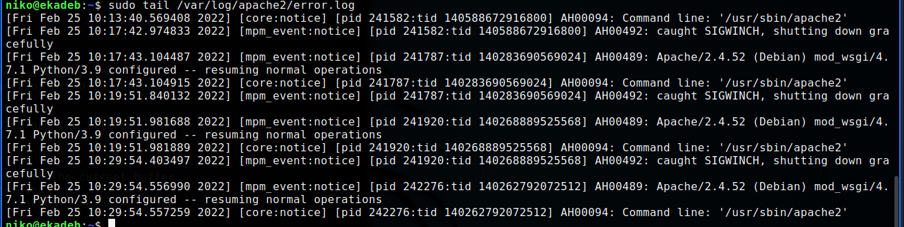 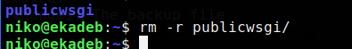Käytin noin 20 tuntia ongelmani selvittämiseen tuloksetta - en siis saanut asennettua Djangoa palvelimelleni. Opin kuitenkin Teron kirjoittamat ohjeet lähes ulkoa, sekä kehityin kansioiden välillä liikkumisessa.